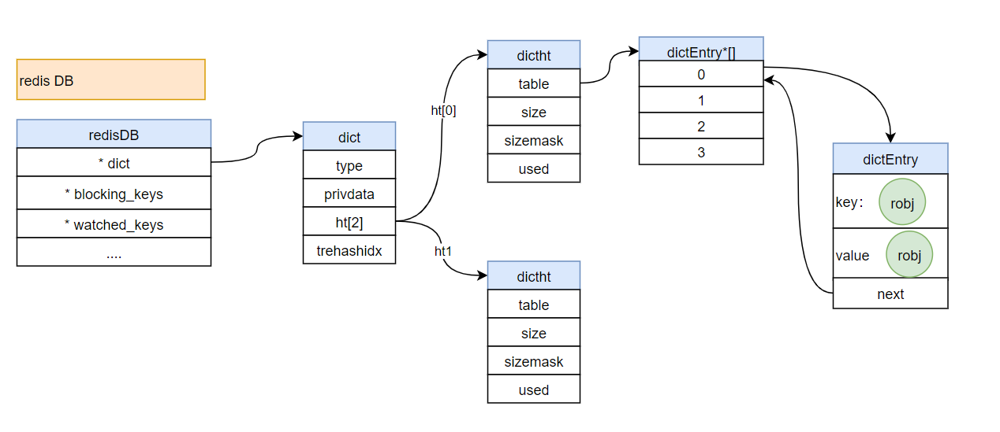

Redis源码分析之DB的初始化
我们知道在Redis中，有16个db，这16个db是redis存放数据的基础，所以我们看一下这16个db是怎么初始化的
1、Redisdb初始化：初始化空间
//初始化Redis的DB所占用的内存空间
server.db = zmalloc(sizeof(redisDb)*server.dbnum);2、redisDB的数据结构：db的结构
/* Redis database representation. There are multiple databases identified
* by integers from 0 (the default database) up to the max configured
* database. The database number is the 'id' field in the structure. */
typedef struct redisDb {
dict *dict; /* The keyspace for this DB */
dict *expires; /* Timeout of keys with a timeout set */
dict *blocking_keys; /* Keys with clients waiting for data (BLPOP)*/
dict *ready_keys; /* Blocked keys that received a PUSH */
dict *watched_keys; /* WATCHED keys for MULTI/EXEC CAS */
int id; /* Database ID */
long long avg_ttl; /* Average TTL, just for stats */
list *defrag_later; /* List of key names to attempt to defrag one by one, gradually. */
} redisDb;3、开始init16个库：循环初始化16个库
//DB初始化-3：这里开始init 16个库
for (j = 0; j < server.dbnum; j++) {
//DB初始化-4：dict，expires，blocking_keys，ready_keys，watched_keys其实底层都是字典dict，所以都要初始化，只不过类型不同
server.db[j].dict = dictCreate(&dbDictType,NULL);
server.db[j].expires = dictCreate(&keyptrDictType,NULL);
server.db[j].blocking_keys = dictCreate(&keylistDictType,NULL);
server.db[j].ready_keys = dictCreate(&objectKeyPointerValueDictType,NULL);
server.db[j].watched_keys = dictCreate(&keylistDictType,NULL);
server.db[j].id = j;
server.db[j].avg_ttl = 0;
server.db[j].defrag_later = listCreate();
}4、初始化：dict，expires，blocking_keys，ready_keys，watched_keys
dict，expires，blocking_keys，ready_keys，watched_keys其实底层都是字典dict，所以都要初始化，只不过类型不同
5、DB初始化-5：初始化dict字典
/* Create a new hash table */
//DB初始化-5：初始化dict字典
dict *dictCreate(dictType *type,
void *privDataPtr)
{
dict *d = zmalloc(sizeof(*d));
_dictInit(d,type,privDataPtr);
return d;
}6、DB初始化-6：dict字典的inti，默认初始化先都是NULL
/* Initialize the hash table */
//DB初始化-6：dict字典的inti，默认初始化先都是NULL
int _dictInit(dict *d, dictType *type,
void *privDataPtr)
{
_dictReset(&d->ht[0]);
_dictReset(&d->ht[1]);
d->type = type;
d->privdata = privDataPtr;
d->rehashidx = -1;
d->iterators = 0;
return DICT_OK;
}7、DB初始化-7：dict的结构
//DB初始化-7：dict的结构
typedef struct dict {
//标识当前字典的类型，而且type中还有一些定义的函数
dictType *type;
//这里会存一些type中函数的可选参数
void *privdata;
//默认固定初始化2个，ht[0]是redis默认用的，ht[1]是渐进式rehash用的
dictht ht[2];
//rehash的标识
long rehashidx; /* rehashing not in progress if rehashidx == -1 */
unsigned long iterators; /* number of iterators currently running */
} dict;8、DB初始化-8：dictht的结构
/* This is our hash table structure. Every dictionary has two of this as we
* implement incremental rehashing, for the old to the new table. */
//DB初始化-8：dictht的结构
typedef struct dictht {
//底层实现，哈希表
dictEntry **table;
//哈希表的大小槽位，默认初始化是4个，超过了就扩容
unsigned long size;
//掩码，用来计算hash的，一直都是 size-1
unsigned long sizemask;
//当前hash表被使用了几个槽位
unsigned long used;
} dictht;9、DB初始化-9：哈希表的存储节点
//DB初始化-9：哈希表的存储节点
typedef struct dictEntry {
//key值
void *key;
//value值
union {
void *val;
uint64_t u64;
int64_t s64;
double d;
} v;
//下一个节点：当hash冲突的时候，会使用链地址法
struct dictEntry *next;
} dictEntry;至此，Redis中存放数据的结构，这部分初始化的任务就结束了。
10、redisDB的图示结构
图示结构如下
JTNDbXhHcmFwaE1vZGVsJTNFJTNDcm9vdCUzRSUzQ214Q2VsbCUyMGlkJTNEJTIyMCUyMiUyRiUzRSUzQ214Q2VsbCUyMGlkJTNEJTIyMSUyMiUyMHBhcmVudCUzRCUyMjAlMjIlMkYlM0UlM0NteENlbGwlMjBpZCUzRCUyMjIlMjIlMjB2YWx1ZSUzRCUyMnJlZGlzREIlMjIlMjBzdHlsZSUzRCUyMnJvdW5kZWQlM0QwJTNCd2hpdGVTcGFjZSUzRHdyYXAlM0JodG1sJTNEMSUzQmZpbGxDb2xvciUzRCUyM2RhZThmYyUzQnN0cm9rZUNvbG9yJTNEJTIzNmM4ZWJmJTNCJTIyJTIwdmVydGV4JTNEJTIyMSUyMiUyMHBhcmVudCUzRCUyMjElMjIlM0UlM0NteEdlb21ldHJ5JTIweCUzRCUyMi0xMTMlMjIlMjB5JTNEJTIyLTU2OCUyMiUyMHdpZHRoJTNEJTIyMTY0JTIyJTIwaGVpZ2h0JTNEJTIyMjQlMjIlMjBhcyUzRCUyMmdlb21ldHJ5JTIyJTJGJTNFJTNDJTJGbXhDZWxsJTNFJTNDbXhDZWxsJTIwaWQlM0QlMjIzJTIyJTIwc3R5bGUlM0QlMjJlZGdlU3R5bGUlM0RvcnRob2dvbmFsRWRnZVN0eWxlJTNCY3VydmVkJTNEMSUzQnJvdW5kZWQlM0QwJTNCb3J0aG9nb25hbExvb3AlM0QxJTNCamV0dHlTaXplJTNEYXV0byUzQmh0bWwlM0QxJTNCZW50cnlYJTNEMCUzQmVudHJ5WSUzRDAuNSUzQmVudHJ5RHglM0QwJTNCZW50cnlEeSUzRDAlM0IlMjIlMjBlZGdlJTNEJTIyMSUyMiUyMHNvdXJjZSUzRCUyMjQlMjIlMjB0YXJnZXQlM0QlMjI5JTIyJTIwcGFyZW50JTNEJTIyMSUyMiUzRSUzQ214R2VvbWV0cnklMjByZWxhdGl2ZSUzRCUyMjElMjIlMjBhcyUzRCUyMmdlb21ldHJ5JTIyJTJGJTNFJTNDJTJGbXhDZWxsJTNFJTNDbXhDZWxsJTIwaWQlM0QlMjI0JTIyJTIwdmFsdWUlM0QlMjIqJTIwZGljdCUyMiUyMHN0eWxlJTNEJTIycm91bmRlZCUzRDAlM0J3aGl0ZVNwYWNlJTNEd3JhcCUzQmh0bWwlM0QxJTNCJTIyJTIwdmVydGV4JTNEJTIyMSUyMiUyMHBhcmVudCUzRCUyMjElMjIlM0UlM0NteEdlb21ldHJ5JTIweCUzRCUyMi0xMTMlMjIlMjB5JTNEJTIyLTU0NCUyMiUyMHdpZHRoJTNEJTIyMTY0JTIyJTIwaGVpZ2h0JTNEJTIyMjQlMjIlMjBhcyUzRCUyMmdlb21ldHJ5JTIyJTJGJTNFJTNDJTJGbXhDZWxsJTNFJTNDbXhDZWxsJTIwaWQlM0QlMjI1JTIyJTIwdmFsdWUlM0QlMjIqJTI2YW1wJTNCbmJzcCUzQmJsb2NraW5nX2tleXMlMjIlMjBzdHlsZSUzRCUyMnJvdW5kZWQlM0QwJTNCd2hpdGVTcGFjZSUzRHdyYXAlM0JodG1sJTNEMSUzQiUyMiUyMHZlcnRleCUzRCUyMjElMjIlMjBwYXJlbnQlM0QlMjIxJTIyJTNFJTNDbXhHZW9tZXRyeSUyMHglM0QlMjItMTEzJTIyJTIweSUzRCUyMi01MjAlMjIlMjB3aWR0aCUzRCUyMjE2NCUyMiUyMGhlaWdodCUzRCUyMjI4JTIyJTIwYXMlM0QlMjJnZW9tZXRyeSUyMiUyRiUzRSUzQyUyRm14Q2VsbCUzRSUzQ214Q2VsbCUyMGlkJTNEJTIyNiUyMiUyMHZhbHVlJTNEJTIyKiUyNmFtcCUzQm5ic3AlM0J3YXRjaGVkX2tleXMlMjIlMjBzdHlsZSUzRCUyMnJvdW5kZWQlM0QwJTNCd2hpdGVTcGFjZSUzRHdyYXAlM0JodG1sJTNEMSUzQiUyMiUyMHZlcnRleCUzRCUyMjElMjIlMjBwYXJlbnQlM0QlMjIxJTIyJTNFJTNDbXhHZW9tZXRyeSUyMHglM0QlMjItMTEzJTIyJTIweSUzRCUyMi00OTIlMjIlMjB3aWR0aCUzRCUyMjE2NCUyMiUyMGhlaWdodCUzRCUyMjI0JTIyJTIwYXMlM0QlMjJnZW9tZXRyeSUyMiUyRiUzRSUzQyUyRm14Q2VsbCUzRSUzQ214Q2VsbCUyMGlkJTNEJTIyNyUyMiUyMHZhbHVlJTNEJTIyLi4uLiUyMiUyMHN0eWxlJTNEJTIycm91bmRlZCUzRDAlM0J3aGl0ZVNwYWNlJTNEd3JhcCUzQmh0bWwlM0QxJTNCJTIyJTIwdmVydGV4JTNEJTIyMSUyMiUyMHBhcmVudCUzRCUyMjElMjIlM0UlM0NteEdlb21ldHJ5JTIweCUzRCUyMi0xMTMlMjIlMjB5JTNEJTIyLTQ2OCUyMiUyMHdpZHRoJTNEJTIyMTY0JTIyJTIwaGVpZ2h0JTNEJTIyMjQlMjIlMjBhcyUzRCUyMmdlb21ldHJ5JTIyJTJGJTNFJTNDJTJGbXhDZWxsJTNFJTNDbXhDZWxsJTIwaWQlM0QlMjI4JTIyJTIwdmFsdWUlM0QlMjJyZWRpcyUyMERCJTIyJTIwc3R5bGUlM0QlMjJ0ZXh0JTNCaHRtbCUzRDElM0JzdHJva2VDb2xvciUzRCUyM2Q3OWIwMCUzQmZpbGxDb2xvciUzRCUyM2ZmZTZjYyUzQmFsaWduJTNEbGVmdCUzQnZlcnRpY2FsQWxpZ24lM0RtaWRkbGUlM0J3aGl0ZVNwYWNlJTNEd3JhcCUzQnJvdW5kZWQlM0QwJTNCJTIyJTIwdmVydGV4JTNEJTIyMSUyMiUyMHBhcmVudCUzRCUyMjElMjIlM0UlM0NteEdlb21ldHJ5JTIweCUzRCUyMi0xMTMlMjIlMjB5JTNEJTIyLTYxOSUyMiUyMHdpZHRoJTNEJTIyMTU5JTIyJTIwaGVpZ2h0JTNEJTIyMzQlMjIlMjBhcyUzRCUyMmdlb21ldHJ5JTIyJTJGJTNFJTNDJTJGbXhDZWxsJTNFJTNDbXhDZWxsJTIwaWQlM0QlMjI5JTIyJTIwdmFsdWUlM0QlMjJkaWN0JTIyJTIwc3R5bGUlM0QlMjJyb3VuZGVkJTNEMCUzQndoaXRlU3BhY2UlM0R3cmFwJTNCaHRtbCUzRDElM0JmaWxsQ29sb3IlM0QlMjNkYWU4ZmMlM0JzdHJva2VDb2xvciUzRCUyMzZjOGViZiUzQiUyMiUyMHZlcnRleCUzRCUyMjElMjIlMjBwYXJlbnQlM0QlMjIxJTIyJTNFJTNDbXhHZW9tZXRyeSUyMHglM0QlMjIxMjklMjIlMjB5JTNEJTIyLTU2NiUyMiUyMHdpZHRoJTNEJTIyNzglMjIlMjBoZWlnaHQlM0QlMjIyNCUyMiUyMGFzJTNEJTIyZ2VvbWV0cnklMjIlMkYlM0UlM0MlMkZteENlbGwlM0UlM0NteENlbGwlMjBpZCUzRCUyMjEwJTIyJTIwdmFsdWUlM0QlMjJ0eXBlJTIyJTIwc3R5bGUlM0QlMjJyb3VuZGVkJTNEMCUzQndoaXRlU3BhY2UlM0R3cmFwJTNCaHRtbCUzRDElM0IlMjIlMjB2ZXJ0ZXglM0QlMjIxJTIyJTIwcGFyZW50JTNEJTIyMSUyMiUzRSUzQ214R2VvbWV0cnklMjB4JTNEJTIyMTI5JTIyJTIweSUzRCUyMi01NDIlMjIlMjB3aWR0aCUzRCUyMjc4JTIyJTIwaGVpZ2h0JTNEJTIyMjQlMjIlMjBhcyUzRCUyMmdlb21ldHJ5JTIyJTJGJTNFJTNDJTJGbXhDZWxsJTNFJTNDbXhDZWxsJTIwaWQlM0QlMjIxMSUyMiUyMHZhbHVlJTNEJTIycHJpdmRhdGElMjIlMjBzdHlsZSUzRCUyMnJvdW5kZWQlM0QwJTNCd2hpdGVTcGFjZSUzRHdyYXAlM0JodG1sJTNEMSUzQiUyMiUyMHZlcnRleCUzRCUyMjElMjIlMjBwYXJlbnQlM0QlMjIxJTIyJTNFJTNDbXhHZW9tZXRyeSUyMHglM0QlMjIxMjklMjIlMjB5JTNEJTIyLTUxOCUyMiUyMHdpZHRoJTNEJTIyNzglMjIlMjBoZWlnaHQlM0QlMjIyNCUyMiUyMGFzJTNEJTIyZ2VvbWV0cnklMjIlMkYlM0UlM0MlMkZteENlbGwlM0UlM0NteENlbGwlMjBpZCUzRCUyMjEyJTIyJTIwc3R5bGUlM0QlMjJlZGdlU3R5bGUlM0RvcnRob2dvbmFsRWRnZVN0eWxlJTNCY3VydmVkJTNEMSUzQnJvdW5kZWQlM0QwJTNCb3J0aG9nb25hbExvb3AlM0QxJTNCamV0dHlTaXplJTNEYXV0byUzQmh0bWwlM0QxJTNCZW50cnlYJTNEMCUzQmVudHJ5WSUzRDAuNSUzQmVudHJ5RHglM0QwJTNCZW50cnlEeSUzRDAlM0IlMjIlMjBlZGdlJTNEJTIyMSUyMiUyMHNvdXJjZSUzRCUyMjE2JTIyJTIwdGFyZ2V0JTNEJTIyMTglMjIlMjBwYXJlbnQlM0QlMjIxJTIyJTNFJTNDbXhHZW9tZXRyeSUyMHJlbGF0aXZlJTNEJTIyMSUyMiUyMGFzJTNEJTIyZ2VvbWV0cnklMjIlMkYlM0UlM0MlMkZteENlbGwlM0UlM0NteENlbGwlMjBpZCUzRCUyMjEzJTIyJTIwdmFsdWUlM0QlMjJodCU1QjAlNUQlMjIlMjBzdHlsZSUzRCUyMmVkZ2VMYWJlbCUzQmh0bWwlM0QxJTNCYWxpZ24lM0RjZW50ZXIlM0J2ZXJ0aWNhbEFsaWduJTNEbWlkZGxlJTNCcmVzaXphYmxlJTNEMCUzQnBvaW50cyUzRCU1QiU1RCUzQiUyMiUyMHZlcnRleCUzRCUyMjElMjIlMjBjb25uZWN0YWJsZSUzRCUyMjAlMjIlMjBwYXJlbnQlM0QlMjIxMiUyMiUzRSUzQ214R2VvbWV0cnklMjB4JTNEJTIyMC4yMTQ5JTIyJTIweSUzRCUyMi0xJTIyJTIwcmVsYXRpdmUlM0QlMjIxJTIyJTIwYXMlM0QlMjJnZW9tZXRyeSUyMiUzRSUzQ214UG9pbnQlMjBhcyUzRCUyMm9mZnNldCUyMiUyRiUzRSUzQyUyRm14R2VvbWV0cnklM0UlM0MlMkZteENlbGwlM0UlM0NteENlbGwlMjBpZCUzRCUyMjE0JTIyJTIwc3R5bGUlM0QlMjJlZGdlU3R5bGUlM0RvcnRob2dvbmFsRWRnZVN0eWxlJTNCY3VydmVkJTNEMSUzQnJvdW5kZWQlM0QwJTNCb3J0aG9nb25hbExvb3AlM0QxJTNCamV0dHlTaXplJTNEYXV0byUzQmh0bWwlM0QxJTNCZW50cnlYJTNEMCUzQmVudHJ5WSUzRDAuNSUzQmVudHJ5RHglM0QwJTNCZW50cnlEeSUzRDAlM0IlMjIlMjBlZGdlJTNEJTIyMSUyMiUyMHNvdXJjZSUzRCUyMjE2JTIyJTIwdGFyZ2V0JTNEJTIyMjQlMjIlMjBwYXJlbnQlM0QlMjIxJTIyJTNFJTNDbXhHZW9tZXRyeSUyMHJlbGF0aXZlJTNEJTIyMSUyMiUyMGFzJTNEJTIyZ2VvbWV0cnklMjIlMkYlM0UlM0MlMkZteENlbGwlM0UlM0NteENlbGwlMjBpZCUzRCUyMjE1JTIyJTIwdmFsdWUlM0QlMjJodDElMjIlMjBzdHlsZSUzRCUyMmVkZ2VMYWJlbCUzQmh0bWwlM0QxJTNCYWxpZ24lM0RjZW50ZXIlM0J2ZXJ0aWNhbEFsaWduJTNEbWlkZGxlJTNCcmVzaXphYmxlJTNEMCUzQnBvaW50cyUzRCU1QiU1RCUzQiUyMiUyMHZlcnRleCUzRCUyMjElMjIlMjBjb25uZWN0YWJsZSUzRCUyMjAlMjIlMjBwYXJlbnQlM0QlMjIxNCUyMiUzRSUzQ214R2VvbWV0cnklMjB4JTNEJTIyMC4wMzQ0JTIyJTIweSUzRCUyMjElMjIlMjByZWxhdGl2ZSUzRCUyMjElMjIlMjBhcyUzRCUyMmdlb21ldHJ5JTIyJTNFJTNDbXhQb2ludCUyMGFzJTNEJTIyb2Zmc2V0JTIyJTJGJTNFJTNDJTJGbXhHZW9tZXRyeSUzRSUzQyUyRm14Q2VsbCUzRSUzQ214Q2VsbCUyMGlkJTNEJTIyMTYlMjIlMjB2YWx1ZSUzRCUyMmh0JTVCMiU1RCUyMiUyMHN0eWxlJTNEJTIycm91bmRlZCUzRDAlM0J3aGl0ZVNwYWNlJTNEd3JhcCUzQmh0bWwlM0QxJTNCJTIyJTIwdmVydGV4JTNEJTIyMSUyMiUyMHBhcmVudCUzRCUyMjElMjIlM0UlM0NteEdlb21ldHJ5JTIweCUzRCUyMjEyOSUyMiUyMHklM0QlMjItNDk0JTIyJTIwd2lkdGglM0QlMjI3OCUyMiUyMGhlaWdodCUzRCUyMjI0JTIyJTIwYXMlM0QlMjJnZW9tZXRyeSUyMiUyRiUzRSUzQyUyRm14Q2VsbCUzRSUzQ214Q2VsbCUyMGlkJTNEJTIyMTclMjIlMjB2YWx1ZSUzRCUyMnRyZWhhc2hpZHglMjIlMjBzdHlsZSUzRCUyMnJvdW5kZWQlM0QwJTNCd2hpdGVTcGFjZSUzRHdyYXAlM0JodG1sJTNEMSUzQiUyMiUyMHZlcnRleCUzRCUyMjElMjIlMjBwYXJlbnQlM0QlMjIxJTIyJTNFJTNDbXhHZW9tZXRyeSUyMHglM0QlMjIxMjklMjIlMjB5JTNEJTIyLTQ3MCUyMiUyMHdpZHRoJTNEJTIyNzglMjIlMjBoZWlnaHQlM0QlMjIyNCUyMiUyMGFzJTNEJTIyZ2VvbWV0cnklMjIlMkYlM0UlM0MlMkZteENlbGwlM0UlM0NteENlbGwlMjBpZCUzRCUyMjE4JTIyJTIwdmFsdWUlM0QlMjJkaWN0aHQlMjIlMjBzdHlsZSUzRCUyMnJvdW5kZWQlM0QwJTNCd2hpdGVTcGFjZSUzRHdyYXAlM0JodG1sJTNEMSUzQmZpbGxDb2xvciUzRCUyM2RhZThmYyUzQnN0cm9rZUNvbG9yJTNEJTIzNmM4ZWJmJTNCJTIyJTIwdmVydGV4JTNEJTIyMSUyMiUyMHBhcmVudCUzRCUyMjElMjIlM0UlM0NteEdlb21ldHJ5JTIweCUzRCUyMjI4NSUyMiUyMHklM0QlMjItNjM1JTIyJTIwd2lkdGglM0QlMjI3OCUyMiUyMGhlaWdodCUzRCUyMjI0JTIyJTIwYXMlM0QlMjJnZW9tZXRyeSUyMiUyRiUzRSUzQyUyRm14Q2VsbCUzRSUzQ214Q2VsbCUyMGlkJTNEJTIyMTklMjIlMjBzdHlsZSUzRCUyMmVkZ2VTdHlsZSUzRG9ydGhvZ29uYWxFZGdlU3R5bGUlM0JjdXJ2ZWQlM0QxJTNCcm91bmRlZCUzRDAlM0JvcnRob2dvbmFsTG9vcCUzRDElM0JqZXR0eVNpemUlM0RhdXRvJTNCaHRtbCUzRDElM0JlbnRyeVglM0QwJTNCZW50cnlZJTNEMC41JTNCZW50cnlEeCUzRDAlM0JlbnRyeUR5JTNEMCUzQiUyMiUyMGVkZ2UlM0QlMjIxJTIyJTIwc291cmNlJTNEJTIyMjAlMjIlMjB0YXJnZXQlM0QlMjIyOSUyMiUyMHBhcmVudCUzRCUyMjElMjIlM0UlM0NteEdlb21ldHJ5JTIwcmVsYXRpdmUlM0QlMjIxJTIyJTIwYXMlM0QlMjJnZW9tZXRyeSUyMiUyRiUzRSUzQyUyRm14Q2VsbCUzRSUzQ214Q2VsbCUyMGlkJTNEJTIyMjAlMjIlMjB2YWx1ZSUzRCUyMnRhYmxlJTIyJTIwc3R5bGUlM0QlMjJyb3VuZGVkJTNEMCUzQndoaXRlU3BhY2UlM0R3cmFwJTNCaHRtbCUzRDElM0IlMjIlMjB2ZXJ0ZXglM0QlMjIxJTIyJTIwcGFyZW50JTNEJTIyMSUyMiUzRSUzQ214R2VvbWV0cnklMjB4JTNEJTIyMjg1JTIyJTIweSUzRCUyMi02MTElMjIlMjB3aWR0aCUzRCUyMjc4JTIyJTIwaGVpZ2h0JTNEJTIyMjQlMjIlMjBhcyUzRCUyMmdlb21ldHJ5JTIyJTJGJTNFJTNDJTJGbXhDZWxsJTNFJTNDbXhDZWxsJTIwaWQlM0QlMjIyMSUyMiUyMHZhbHVlJTNEJTIyc2l6ZSUyMiUyMHN0eWxlJTNEJTIycm91bmRlZCUzRDAlM0J3aGl0ZVNwYWNlJTNEd3JhcCUzQmh0bWwlM0QxJTNCJTIyJTIwdmVydGV4JTNEJTIyMSUyMiUyMHBhcmVudCUzRCUyMjElMjIlM0UlM0NteEdlb21ldHJ5JTIweCUzRCUyMjI4NSUyMiUyMHklM0QlMjItNTg3JTIyJTIwd2lkdGglM0QlMjI3OCUyMiUyMGhlaWdodCUzRCUyMjI0JTIyJTIwYXMlM0QlMjJnZW9tZXRyeSUyMiUyRiUzRSUzQyUyRm14Q2VsbCUzRSUzQ214Q2VsbCUyMGlkJTNEJTIyMjIlMjIlMjB2YWx1ZSUzRCUyMnNpemVtYXNrJTIyJTIwc3R5bGUlM0QlMjJyb3VuZGVkJTNEMCUzQndoaXRlU3BhY2UlM0R3cmFwJTNCaHRtbCUzRDElM0IlMjIlMjB2ZXJ0ZXglM0QlMjIxJTIyJTIwcGFyZW50JTNEJTIyMSUyMiUzRSUzQ214R2VvbWV0cnklMjB4JTNEJTIyMjg1JTIyJTIweSUzRCUyMi01NjMlMjIlMjB3aWR0aCUzRCUyMjc4JTIyJTIwaGVpZ2h0JTNEJTIyMjQlMjIlMjBhcyUzRCUyMmdlb21ldHJ5JTIyJTJGJTNFJTNDJTJGbXhDZWxsJTNFJTNDbXhDZWxsJTIwaWQlM0QlMjIyMyUyMiUyMHZhbHVlJTNEJTIydXNlZCUyMiUyMHN0eWxlJTNEJTIycm91bmRlZCUzRDAlM0J3aGl0ZVNwYWNlJTNEd3JhcCUzQmh0bWwlM0QxJTNCJTIyJTIwdmVydGV4JTNEJTIyMSUyMiUyMHBhcmVudCUzRCUyMjElMjIlM0UlM0NteEdlb21ldHJ5JTIweCUzRCUyMjI4NSUyMiUyMHklM0QlMjItNTM5JTIyJTIwd2lkdGglM0QlMjI3OCUyMiUyMGhlaWdodCUzRCUyMjI0JTIyJTIwYXMlM0QlMjJnZW9tZXRyeSUyMiUyRiUzRSUzQyUyRm14Q2VsbCUzRSUzQ214Q2VsbCUyMGlkJTNEJTIyMjQlMjIlMjB2YWx1ZSUzRCUyMmRpY3RodCUyMiUyMHN0eWxlJTNEJTIycm91bmRlZCUzRDAlM0J3aGl0ZVNwYWNlJTNEd3JhcCUzQmh0bWwlM0QxJTNCZmlsbENvbG9yJTNEJTIzZGFlOGZjJTNCc3Ryb2tlQ29sb3IlM0QlMjM2YzhlYmYlM0IlMjIlMjB2ZXJ0ZXglM0QlMjIxJTIyJTIwcGFyZW50JTNEJTIyMSUyMiUzRSUzQ214R2VvbWV0cnklMjB4JTNEJTIyMjg1JTIyJTIweSUzRCUyMi00NDglMjIlMjB3aWR0aCUzRCUyMjc4JTIyJTIwaGVpZ2h0JTNEJTIyMjQlMjIlMjBhcyUzRCUyMmdlb21ldHJ5JTIyJTJGJTNFJTNDJTJGbXhDZWxsJTNFJTNDbXhDZWxsJTIwaWQlM0QlMjIyNSUyMiUyMHZhbHVlJTNEJTIydGFibGUlMjIlMjBzdHlsZSUzRCUyMnJvdW5kZWQlM0QwJTNCd2hpdGVTcGFjZSUzRHdyYXAlM0JodG1sJTNEMSUzQiUyMiUyMHZlcnRleCUzRCUyMjElMjIlMjBwYXJlbnQlM0QlMjIxJTIyJTNFJTNDbXhHZW9tZXRyeSUyMHglM0QlMjIyODUlMjIlMjB5JTNEJTIyLTQyNCUyMiUyMHdpZHRoJTNEJTIyNzglMjIlMjBoZWlnaHQlM0QlMjIyNCUyMiUyMGFzJTNEJTIyZ2VvbWV0cnklMjIlMkYlM0UlM0MlMkZteENlbGwlM0UlM0NteENlbGwlMjBpZCUzRCUyMjI2JTIyJTIwdmFsdWUlM0QlMjJzaXplJTIyJTIwc3R5bGUlM0QlMjJyb3VuZGVkJTNEMCUzQndoaXRlU3BhY2UlM0R3cmFwJTNCaHRtbCUzRDElM0IlMjIlMjB2ZXJ0ZXglM0QlMjIxJTIyJTIwcGFyZW50JTNEJTIyMSUyMiUzRSUzQ214R2VvbWV0cnklMjB4JTNEJTIyMjg1JTIyJTIweSUzRCUyMi00MDAlMjIlMjB3aWR0aCUzRCUyMjc4JTIyJTIwaGVpZ2h0JTNEJTIyMjQlMjIlMjBhcyUzRCUyMmdlb21ldHJ5JTIyJTJGJTNFJTNDJTJGbXhDZWxsJTNFJTNDbXhDZWxsJTIwaWQlM0QlMjIyNyUyMiUyMHZhbHVlJTNEJTIyc2l6ZW1hc2slMjIlMjBzdHlsZSUzRCUyMnJvdW5kZWQlM0QwJTNCd2hpdGVTcGFjZSUzRHdyYXAlM0JodG1sJTNEMSUzQiUyMiUyMHZlcnRleCUzRCUyMjElMjIlMjBwYXJlbnQlM0QlMjIxJTIyJTNFJTNDbXhHZW9tZXRyeSUyMHglM0QlMjIyODUlMjIlMjB5JTNEJTIyLTM3NiUyMiUyMHdpZHRoJTNEJTIyNzglMjIlMjBoZWlnaHQlM0QlMjIyNCUyMiUyMGFzJTNEJTIyZ2VvbWV0cnklMjIlMkYlM0UlM0MlMkZteENlbGwlM0UlM0NteENlbGwlMjBpZCUzRCUyMjI4JTIyJTIwdmFsdWUlM0QlMjJ1c2VkJTIyJTIwc3R5bGUlM0QlMjJyb3VuZGVkJTNEMCUzQndoaXRlU3BhY2UlM0R3cmFwJTNCaHRtbCUzRDElM0IlMjIlMjB2ZXJ0ZXglM0QlMjIxJTIyJTIwcGFyZW50JTNEJTIyMSUyMiUzRSUzQ214R2VvbWV0cnklMjB4JTNEJTIyMjg1JTIyJTIweSUzRCUyMi0zNTIlMjIlMjB3aWR0aCUzRCUyMjc4JTIyJTIwaGVpZ2h0JTNEJTIyMjQlMjIlMjBhcyUzRCUyMmdlb21ldHJ5JTIyJTJGJTNFJTNDJTJGbXhDZWxsJTNFJTNDbXhDZWxsJTIwaWQlM0QlMjIyOSUyMiUyMHZhbHVlJTNEJTIyZGljdEVudHJ5KiU1QiU1RCUyMiUyMHN0eWxlJTNEJTIycm91bmRlZCUzRDAlM0J3aGl0ZVNwYWNlJTNEd3JhcCUzQmh0bWwlM0QxJTNCZmlsbENvbG9yJTNEJTIzZGFlOGZjJTNCc3Ryb2tlQ29sb3IlM0QlMjM2YzhlYmYlM0IlMjIlMjB2ZXJ0ZXglM0QlMjIxJTIyJTIwcGFyZW50JTNEJTIyMSUyMiUzRSUzQ214R2VvbWV0cnklMjB4JTNEJTIyNDEzJTIyJTIweSUzRCUyMi02MzglMjIlMjB3aWR0aCUzRCUyMjEwNSUyMiUyMGhlaWdodCUzRCUyMjI0JTIyJTIwYXMlM0QlMjJnZW9tZXRyeSUyMiUyRiUzRSUzQyUyRm14Q2VsbCUzRSUzQ214Q2VsbCUyMGlkJTNEJTIyMzAlMjIlMjBzdHlsZSUzRCUyMmVkZ2VTdHlsZSUzRG9ydGhvZ29uYWxFZGdlU3R5bGUlM0JjdXJ2ZWQlM0QxJTNCcm91bmRlZCUzRDAlM0JvcnRob2dvbmFsTG9vcCUzRDElM0JqZXR0eVNpemUlM0RhdXRvJTNCaHRtbCUzRDElM0JleGl0WCUzRDElM0JleGl0WSUzRDAuMjUlM0JleGl0RHglM0QwJTNCZXhpdER5JTNEMCUzQiUyMiUyMGVkZ2UlM0QlMjIxJTIyJTIwc291cmNlJTNEJTIyMzElMjIlMjB0YXJnZXQlM0QlMjIzMiUyMiUyMHBhcmVudCUzRCUyMjElMjIlM0UlM0NteEdlb21ldHJ5JTIwcmVsYXRpdmUlM0QlMjIxJTIyJTIwYXMlM0QlMjJnZW9tZXRyeSUyMiUyRiUzRSUzQyUyRm14Q2VsbCUzRSUzQ214Q2VsbCUyMGlkJTNEJTIyMzElMjIlMjB2YWx1ZSUzRCUyMjAlMjIlMjBzdHlsZSUzRCUyMnJvdW5kZWQlM0QwJTNCd2hpdGVTcGFjZSUzRHdyYXAlM0JodG1sJTNEMSUzQiUyMiUyMHZlcnRleCUzRCUyMjElMjIlMjBwYXJlbnQlM0QlMjIxJTIyJTNFJTNDbXhHZW9tZXRyeSUyMHglM0QlMjI0MTMlMjIlMjB5JTNEJTIyLTYxOCUyMiUyMHdpZHRoJTNEJTIyMTA1JTIyJTIwaGVpZ2h0JTNEJTIyMjIlMjIlMjBhcyUzRCUyMmdlb21ldHJ5JTIyJTJGJTNFJTNDJTJGbXhDZWxsJTNFJTNDbXhDZWxsJTIwaWQlM0QlMjIzMiUyMiUyMHZhbHVlJTNEJTIyZGljdEVudHJ5JTIyJTIwc3R5bGUlM0QlMjJyb3VuZGVkJTNEMCUzQndoaXRlU3BhY2UlM0R3cmFwJTNCaHRtbCUzRDElM0JmaWxsQ29sb3IlM0QlMjNkYWU4ZmMlM0JzdHJva2VDb2xvciUzRCUyMzZjOGViZiUzQiUyMiUyMHZlcnRleCUzRCUyMjElMjIlMjBwYXJlbnQlM0QlMjIxJTIyJTNFJTNDbXhHZW9tZXRyeSUyMHglM0QlMjI1NzclMjIlMjB5JTNEJTIyLTU0OCUyMiUyMHdpZHRoJTNEJTIyOTclMjIlMjBoZWlnaHQlM0QlMjIyNiUyMiUyMGFzJTNEJTIyZ2VvbWV0cnklMjIlMkYlM0UlM0MlMkZteENlbGwlM0UlM0NteENlbGwlMjBpZCUzRCUyMjMzJTIyJTIwdmFsdWUlM0QlMjJrZXklRUYlQkMlOUElMjIlMjBzdHlsZSUzRCUyMnJvdW5kZWQlM0QwJTNCd2hpdGVTcGFjZSUzRHdyYXAlM0JodG1sJTNEMSUzQmFsaWduJTNEbGVmdCUzQiUyMiUyMHZlcnRleCUzRCUyMjElMjIlMjBwYXJlbnQlM0QlMjIxJTIyJTNFJTNDbXhHZW9tZXRyeSUyMHglM0QlMjI1NzclMjIlMjB5JTNEJTIyLTUyMiUyMiUyMHdpZHRoJTNEJTIyOTclMjIlMjBoZWlnaHQlM0QlMjI0NiUyMiUyMGFzJTNEJTIyZ2VvbWV0cnklMjIlMkYlM0UlM0MlMkZteENlbGwlM0UlM0NteENlbGwlMjBpZCUzRCUyMjM0JTIyJTIwdmFsdWUlM0QlMjJ2YWx1ZSUyMiUyMHN0eWxlJTNEJTIycm91bmRlZCUzRDAlM0J3aGl0ZVNwYWNlJTNEd3JhcCUzQmh0bWwlM0QxJTNCYWxpZ24lM0RsZWZ0JTNCJTIyJTIwdmVydGV4JTNEJTIyMSUyMiUyMHBhcmVudCUzRCUyMjElMjIlM0UlM0NteEdlb21ldHJ5JTIweCUzRCUyMjU3NyUyMiUyMHklM0QlMjItNDc2JTIyJTIwd2lkdGglM0QlMjI5NyUyMiUyMGhlaWdodCUzRCUyMjQ0JTIyJTIwYXMlM0QlMjJnZW9tZXRyeSUyMiUyRiUzRSUzQyUyRm14Q2VsbCUzRSUzQ214Q2VsbCUyMGlkJTNEJTIyMzUlMjIlMjBzdHlsZSUzRCUyMmVkZ2VTdHlsZSUzRG9ydGhvZ29uYWxFZGdlU3R5bGUlM0JjdXJ2ZWQlM0QxJTNCcm91bmRlZCUzRDAlM0JvcnRob2dvbmFsTG9vcCUzRDElM0JqZXR0eVNpemUlM0RhdXRvJTNCaHRtbCUzRDElM0JlbnRyeVglM0QxJTNCZW50cnlZJTNEMC43NSUzQmVudHJ5RHglM0QwJTNCZW50cnlEeSUzRDAlM0IlMjIlMjBlZGdlJTNEJTIyMSUyMiUyMHNvdXJjZSUzRCUyMjM2JTIyJTIwdGFyZ2V0JTNEJTIyMzElMjIlMjBwYXJlbnQlM0QlMjIxJTIyJTNFJTNDbXhHZW9tZXRyeSUyMHJlbGF0aXZlJTNEJTIyMSUyMiUyMGFzJTNEJTIyZ2VvbWV0cnklMjIlMkYlM0UlM0MlMkZteENlbGwlM0UlM0NteENlbGwlMjBpZCUzRCUyMjM2JTIyJTIwdmFsdWUlM0QlMjJuZXh0JTIyJTIwc3R5bGUlM0QlMjJyb3VuZGVkJTNEMCUzQndoaXRlU3BhY2UlM0R3cmFwJTNCaHRtbCUzRDElM0IlMjIlMjB2ZXJ0ZXglM0QlMjIxJTIyJTIwcGFyZW50JTNEJTIyMSUyMiUzRSUzQ214R2VvbWV0cnklMjB4JTNEJTIyNTc3JTIyJTIweSUzRCUyMi00MzQlMjIlMjB3aWR0aCUzRCUyMjk3JTIyJTIwaGVpZ2h0JTNEJTIyMjYlMjIlMjBhcyUzRCUyMmdlb21ldHJ5JTIyJTJGJTNFJTNDJTJGbXhDZWxsJTNFJTNDbXhDZWxsJTIwaWQlM0QlMjIzNyUyMiUyMHZhbHVlJTNEJTIyMSUyMiUyMHN0eWxlJTNEJTIycm91bmRlZCUzRDAlM0J3aGl0ZVNwYWNlJTNEd3JhcCUzQmh0bWwlM0QxJTNCJTIyJTIwdmVydGV4JTNEJTIyMSUyMiUyMHBhcmVudCUzRCUyMjElMjIlM0UlM0NteEdlb21ldHJ5JTIweCUzRCUyMjQxMyUyMiUyMHklM0QlMjItNTk2JTIyJTIwd2lkdGglM0QlMjIxMDUlMjIlMjBoZWlnaHQlM0QlMjIyMiUyMiUyMGFzJTNEJTIyZ2VvbWV0cnklMjIlMkYlM0UlM0MlMkZteENlbGwlM0UlM0NteENlbGwlMjBpZCUzRCUyMjM4JTIyJTIwdmFsdWUlM0QlMjIyJTIyJTIwc3R5bGUlM0QlMjJyb3VuZGVkJTNEMCUzQndoaXRlU3BhY2UlM0R3cmFwJTNCaHRtbCUzRDElM0IlMjIlMjB2ZXJ0ZXglM0QlMjIxJTIyJTIwcGFyZW50JTNEJTIyMSUyMiUzRSUzQ214R2VvbWV0cnklMjB4JTNEJTIyNDEzJTIyJTIweSUzRCUyMi01NzQlMjIlMjB3aWR0aCUzRCUyMjEwNSUyMiUyMGhlaWdodCUzRCUyMjIyJTIyJTIwYXMlM0QlMjJnZW9tZXRyeSUyMiUyRiUzRSUzQyUyRm14Q2VsbCUzRSUzQ214Q2VsbCUyMGlkJTNEJTIyMzklMjIlMjB2YWx1ZSUzRCUyMjMlMjIlMjBzdHlsZSUzRCUyMnJvdW5kZWQlM0QwJTNCd2hpdGVTcGFjZSUzRHdyYXAlM0JodG1sJTNEMSUzQiUyMiUyMHZlcnRleCUzRCUyMjElMjIlMjBwYXJlbnQlM0QlMjIxJTIyJTNFJTNDbXhHZW9tZXRyeSUyMHglM0QlMjI0MTMlMjIlMjB5JTNEJTIyLTU1MiUyMiUyMHdpZHRoJTNEJTIyMTA1JTIyJTIwaGVpZ2h0JTNEJTIyMjIlMjIlMjBhcyUzRCUyMmdlb21ldHJ5JTIyJTJGJTNFJTNDJTJGbXhDZWxsJTNFJTNDbXhDZWxsJTIwaWQlM0QlMjI0MCUyMiUyMHZhbHVlJTNEJTIycm9iaiUyMiUyMHN0eWxlJTNEJTIyZWxsaXBzZSUzQndoaXRlU3BhY2UlM0R3cmFwJTNCaHRtbCUzRDElM0JhbGlnbiUzRGNlbnRlciUzQmZpbGxDb2xvciUzRCUyM2Q1ZThkNCUzQnN0cm9rZUNvbG9yJTNEJTIzODJiMzY2JTNCJTIyJTIwdmVydGV4JTNEJTIyMSUyMiUyMHBhcmVudCUzRCUyMjElMjIlM0UlM0NteEdlb21ldHJ5JTIweCUzRCUyMjYxNiUyMiUyMHklM0QlMjItNTE4JTIyJTIwd2lkdGglM0QlMjIzOSUyMiUyMGhlaWdodCUzRCUyMjM5JTIyJTIwYXMlM0QlMjJnZW9tZXRyeSUyMiUyRiUzRSUzQyUyRm14Q2VsbCUzRSUzQ214Q2VsbCUyMGlkJTNEJTIyNDElMjIlMjB2YWx1ZSUzRCUyMnJvYmolMjIlMjBzdHlsZSUzRCUyMmVsbGlwc2UlM0J3aGl0ZVNwYWNlJTNEd3JhcCUzQmh0bWwlM0QxJTNCYWxpZ24lM0RjZW50ZXIlM0JmaWxsQ29sb3IlM0QlMjNkNWU4ZDQlM0JzdHJva2VDb2xvciUzRCUyMzgyYjM2NiUzQiUyMiUyMHZlcnRleCUzRCUyMjElMjIlMjBwYXJlbnQlM0QlMjIxJTIyJTNFJTNDbXhHZW9tZXRyeSUyMHglM0QlMjI2MjIlMjIlMjB5JTNEJTIyLTQ3My41JTIyJTIwd2lkdGglM0QlMjIzOSUyMiUyMGhlaWdodCUzRCUyMjM5JTIyJTIwYXMlM0QlMjJnZW9tZXRyeSUyMiUyRiUzRSUzQyUyRm14Q2VsbCUzRSUzQyUyRnJvb3QlM0UlM0MlMkZteEdyYXBoTW9kZWwlM0U=